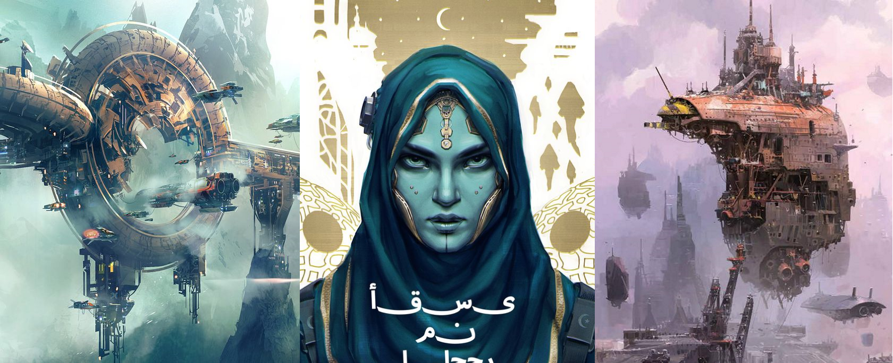

by Parker Harris Emerson
The Osmium Universe is one of infinite possibilities, a kitchen-sink where awesome is dialed to 11. This is full minotaurs with chain guns and undead dragon hackers kitchen-sink, where every trope is included where it would heighten the players sense of enjoyment and enthusiasm.
The GM should be a fan of their players, and the players should be excited to play in the universe, so the universe has to be epic enough for the players to feel truly grandiose against the backdrop.
The universe is designed so that the tone should match Spielberg. Star Wars. Action and adventure, where plucky heroes save the day, but occasionally there is also a brief detour to have a commentary on fascism.
The setting was designed for use with Genesys Role Playing System, handily the most fun I've had with an RPG, probably ever.
The Players' section, above, is where you'll find the kind of rules info a player needs to build a character. The GM section above is more rules on the universe and so forth. Players can still poke around there, generally without too much worry. The Adventures section, though - that's strictly off-limits for players. That's behing-the-curtain territory.
November 13, 2018: The site is currently under active development and is not yet considered ready for wide release.
Osmium and Osmium Universe are trademarked (TM) by Parker Harris Emerson. The Osmium Universe is Copyright 2018 Parker Harris Emerson. Genesys and the Narrative Dice System Copyright 2017-2018 Fantasy Flight Games.